CLAUDE’S PICK


MMEnterprise-Bench: 진화하는 직장 기록에 대한 엔터프라이즈 에이전트 평가
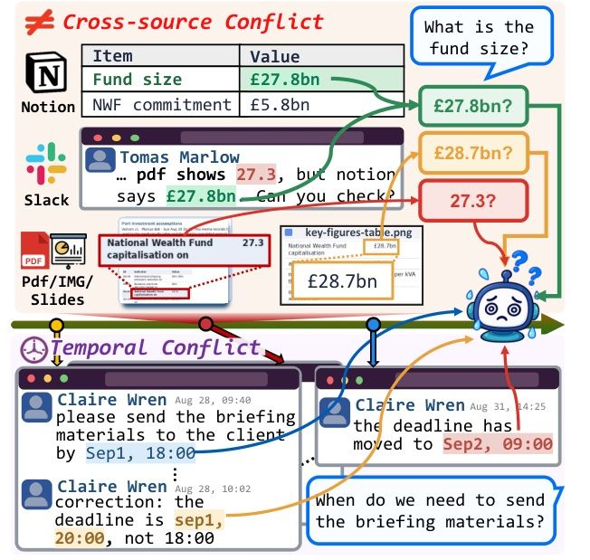
팀 협업을 통해 지속적으로 변하는 직장 기록에서 신뢰할 수 있는 질의응답을 수행하는 엔터프라이즈 에이전트 개발 시 발생하는 문제를 해결하기 위해 MMEnterprise-Bench를 소개한다. 이 벤치마크는 1,613개의 질문으로 구성되며, 증거 추론, 충돌 해결, 답변 불가능성 판단의 세 가지 범주를 포함한다. 평가 결과 10개의 주요 멀티모달 LLM이 교차 출처 및 시간적 충돌이 있거나 여러 이미지에 걸친 증거를 다룰 때 어려움을 겪는다는 것을 발견했다.
핵심 포인트: 핵심 성과: 1,613개의 질문으로 구성된 멀티모달 벤치마크를 통해 엔터프라이즈 에이전트의 증거 추론, 충돌 해결, 답변 불가능성 인식 능력을 체계적으로 평가하였으며, 기존 최강 모델들도 교차 출처 및 시간적 충돌 해결에서 현저한 성능 저하를 보임을 입증했다.
논문 (Papers)
RAG 기반 라이브 이벤트 실험: AI 채팅이 전통 검색을 대체할 수 없다는 증거
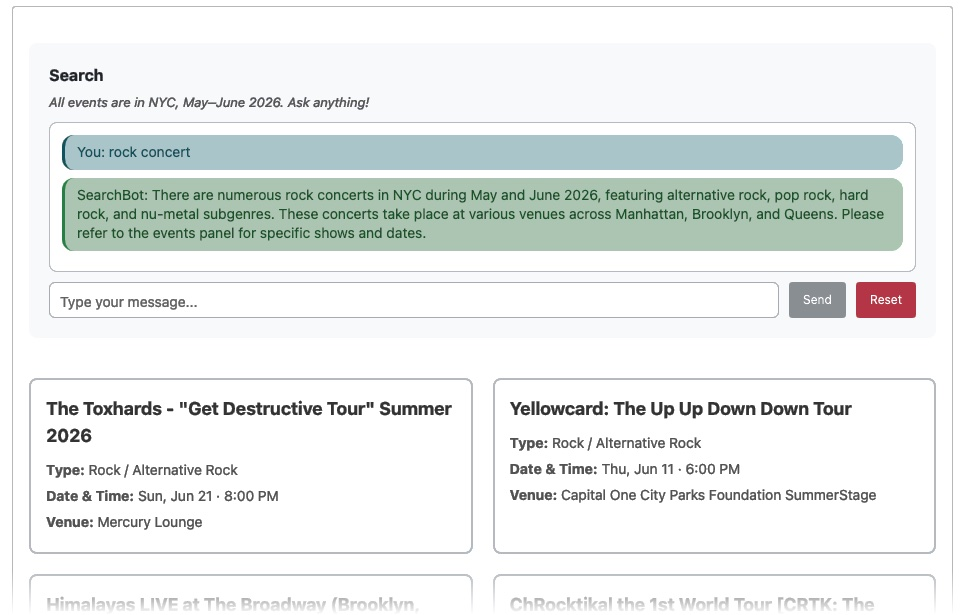
온라인 검색 인터페이스에 대화형 AI 도구가 통합되면서 사용자 행동과 검색 결과에 미치는 영향을 파악하기 위해 실시된 연구. 필터 기반 인터페이스, AI 채팅 인터페이스, 하이브리드 인터페이스 세 가지를 비교한 결과, AI 채팅 인터페이스가 가장 낮은 성능을 보였다. 에코 챔버 효과로 사용자가 카탈로그에 없는 이벤트를 검색하고, 프롬프팅 피로로 인해 첫 번째 제안을 선택하는 경향이 발견되어 AI가 기존 검색의 보완 도구로 가장 효과적임을 시사한다.
핵심 포인트: 핵심 성과: 세 가지 인터페이스 비교 실험에서 Chat 조건이 최악의 성능을 기록했으며, GPT-4.1-mini, GPT-5.2, GPT-5.4 모두에서 일관되게 나타났고, 에코 챔버와 프롬프팅 피로 두 가지 메커니즘이 성능 저하의 주요 원인임을 규명했다.
논문 (Papers)


ClariEdge: RAG 시스템을 위한 쿼리 명확화 파인튜닝
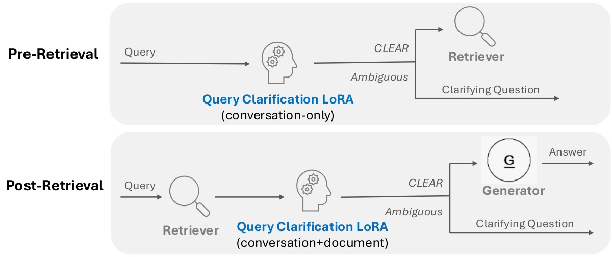
RAG 시스템에서 사용자의 모호한 쿼리로 인해 발생하는 문제를 해결하기 위해 ClariEdge 데이터셋과 경량 LoRA 모델을 제시한다. 약 3900개의 예제로 구성된 데이터셋에서 하드 네거티브를 포함하여 실제 모호한 쿼리와 외형상 모호하지만 문맥에서 해결 가능한 쿼리를 구분한다. 파인튜닝된 LoRA 모델은 96.6%의 분류 정확도를 달성하며 더 큰 모델의 프롬프트 기반 방식을 능가하고, 검색 전후 두 단계에서 모두 활용 가능하다.
핵심 포인트: 핵심 성과: 경량 LoRA 모델이 96.6% 분류 정확도를 달성하며 프롬프트된 대규모 모델을 초과 성능하고, 하드 네거티브 학습으로 진정한 모호성을 구분하며 RAG 파이프라인의 검색 전후 두 지점에서 활용 가능.
논문 (Papers)
AI & RESEARCH
Self-Instructed CoT: 추론 모델의 체인-오브-소트 제어 가능성 향상
최근 연구에서 추론 모델이 사용자 프롬프트의 제약을 따르지 못한다고 보고했으나, 이는 제약 명시 방식의 문제일 수 있다는 주장을 제시한다. 본 논문은 제약을 모델의 체인-오브-소트 내 자기 지시로 삽입하는 Self-Instructed CoT Controllability 평가 방법을 도입하여, 자기 지시 방식에서 모델이 표준 사용자 지시보다 훨씬 높은 제어 가능성을 달성함을 보여준다. 간단한 상기문만으로도 제어 가능성이 크게 향상되며, 부트스트랩 기법으로 사용자 프롬프트만으로도 개선된 제어가 가능함을 입증한다.
핵심 포인트: 핵심 기여: 자기 지시 방식에서 체인-오브-소트 제어 가능성이 표준 사용자 지시 대비 현저히 향상되며, 모니터링 회피 위험을 드러내 체인-오브-소트 감시 가능성에 대한 보안 고려사항을 제시한다.
논문 (Papers)
FLINT: 고정 예산 기반 다중벡터 검색 모델
ColBERT 같은 다중벡터 검색 모델은 토큰 수준 매칭으로 높은 성능을 보이지만 모든 토큰마다 벡터를 저장해야 해 저장 공간과 검색 속도에 문제가 있다. FLINT는 어텐션 기반 풀링으로 쿼리와 문서를 고정 개수의 임베딩 벡터로 표현하며, 양쪽에 대칭적으로 풀링을 적용해 저장소와 벡터 비교 비용을 줄인다. BEIR 벤치마크에서 기존 방법과 유사한 성능을 유지하면서 장문 쿼리 데이터셋에서 더 우수한 결과를 제공한다.
핵심 포인트: 핵심 성과: 장문 쿼리 코퍼스에서 ConstBERT 대비 1.5-2.8배 빠른 검색 속도 달성, ColBERTv2 대비 5.3-9.3배 인덱스 크기 감축, BERT와 ModernBERT 두 가지 백본에서 효율성-효과성 이점 확인.
논문 (Papers)
UIBK-Embedding: 밀집 임베딩과 후기 상호작용 검색을 통합한 텍스트 검색
밀집 인코더와 후기 상호작용 검색기는 서로 다른 쿼리에서 성능 저하를 보이는 문제를 해결하기 위해 두 기술을 하나의 모델로 통합하는 접근법을 제시한다. UIBK-Embedding-v1은 179M 파라미터 인코더로 한 번의 패스에서 두 표현을 모두 생성하고 표준 MaxSim으로 점수를 매기며, 밀집 임베딩을 토큰 벡터 리스트에 세 개의 추가 벡터로 작성하여 기존 후기 상호작용 인덱스와의 호환성을 유지한다.
핵심 포인트: 핵심 성과: BEIR 벤치마크에서 59.79 nDCG@10을 달성하여 같은 규모의 LateOn 모델보다 2.57포인트 높으며, 모든 15개 데이터셋에서 우월한 성능을 보임. MTEB 저장소의 156개 완전 결과 모델 중 1.5B 파라미터 이상의 모델들만이 더 높은 점수를 기록.
논문 (Papers)
AI System Design Guide — 3,900개 별의 무료 AI 시스템 설계 교재
AI 엔지니어들이 프로덕션 시스템 설계를 배우기 위해 체계적인 학습 자료의 부재로 겪는 어려움을 해결하는 종합 가이드. 20개 챕터에 RAG, AI 에이전트, MCP, 메모리, 보안, 성능 최적화 등을 담았으며, 실무 설계 사례와 147개의 면접 질문을 포함해 실전 중심의 학습을 지원한다. MIT 라이선스로 공개되었고, 마크다운 형식으로 다양한 번역 도구를 통해 한국어 학습이 가능하다.
핵심 포인트: 핵심 기여: 20개 챕터에 RAG부터 성능 최적화까지 프로덕션 AI 시스템의 전체 설계 패턴을 다루며, AI 엔지니어 면접 147개 질문과 실무 사례 연구를 포함해 즉시 활용 가능한 설계 지식을 제공한다.
🔗 github.com/ombharatiya/ai-system-design-g…
GitHub
Gemini 4 Argon — Google의 장기 추론 모델, 복잡한 업무 자동화 지원
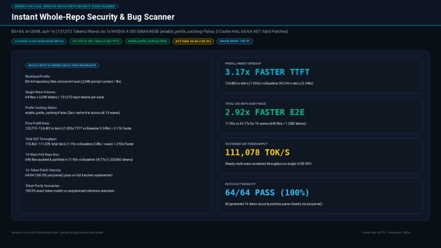
Google이 장시간 이어지는 복잡한 작업을 위해 설계한 Gemini 4 Argon을 발표했다. 이 모델은 소프트웨어 개발, 법률·금융 업무, 사이버 방어 등에서 깊은 추론 능력을 유지하며, 출력 토큰 한도를 64K에서 100만 토큰으로 확대했다. DeepSWE v1.1에서 77.9%, AutomationBench에서 51.3%의 최고 성능을 기록했으며, 초기 가격은 입력/출력 100만 토큰당 2달러/10달러이다.
핵심 포인트: 핵심 성과: Google 내부에서 C/C++ 코드의 Rust 전환과 메모리 최적화에 활용 중이며 300TiB 이상의 메모리 절약 달성, 장기 소프트웨어 개발 평가에서 77.9% 최고 성능 기록.
🔗 threads.com/@choi.openai/post/DfA_PFHE3xm…
기타 (Others)
Unlimited OCR 2 — 수천 페이지 문서를 7배 빠르게 처리하는 오픈소스 OCR
대규모 문서 처리 시 메모리 부족과 처리 속도 저하 문제를 해결하기 위해 Baidu가 개발한 오픈소스 OCR 모델. SR-SWA와 Unlimited-Horizon Decoding 기술을 활용해 문서를 여러 구간으로 분할하고 이전 구간의 마지막 페이지 정보만 유지하면서 불필요한 메모리를 해제한다. 여러 페이지에 걸친 표나 이어지는 문단도 정확히 인식한다.
핵심 포인트: 핵심 성과: 100페이지 문서 기준 처리 속도 최대 7배 향상, 캐시 메모리 사용량 47GB에서 1.77GB로 97% 감소
🔗 huggingface.co/baidu/Unlimited-OCR-2
기타 (Others)
GPT-6.1 Terra — Astra보다 저렴하고 우수한 성능의 중급 모델 출시
OpenAI가 GPT-6.1 Terra를 출시했다. 이 모델은 화면 이해, 앱 간 조작, 자연스러운 글쓰기를 결합한 컴퓨터 사용 능력으로 일상 업무를 효율적으로 처리한다. 기존 GPT-5.6 Terra(42.6%)보다 15%p 높은 57.6% 성능을 내면서 과제당 비용은 0.29달러로 3분의 1 수준이며, 같은 성능의 GPT-6 Astra 비용 4.82달러의 16분의 1에 불과하다. ChatGPT Work와 Codex에서 단계적으로 적용되며 API에서는 gpt-6.1-terra로 사용할 수 있다.
핵심 포인트: 핵심 성과: Agents’ Last Exam 벤치마크에서 57.6% 정확도를 달성하면서 과제당 0.29달러의 저비용 운영으로 성능 대비 비용 측면에서 GPT-6 Astra 대비 16배 효율성 제공.
🔗 openai.com/index/introducing-gpt-6-1-terr…
기타 (Others)
MoEdernColBERT: 1.5M~115M 초소형 MoE 임베딩 모델
기존 임베딩 모델들은 매개변수 규모가 크면서도 인코딩 속도가 느리고 배포 비용이 높다는 문제가 있다. VAGO Solutions의 MoEdernColBERT는 1.5M부터 115M 범위의 극도로 경량화된 MoE 기반 구조를 사용하면서도, 토큰당 128차원 멀티 벡터 검색 방식으로 5배 큰 모델보다 8배 빠른 인코딩 속도와 우수한 검색 품질을 제공한다. Apache 2.0 라이선스와 Sentence Transformers 통합으로 경량 RAG 검색 파이프라인 구축에 즉시 활용할 수 있다.
핵심 포인트: 핵심 성과: 115M 모델이 5배 큰 Qwen3-Embedding-0.6B 대비 8배 빠른 인코딩 속도 달성, 1.5M 모델(활성 파라미터 0.88M)도 97M급 모델을 성능에서 초과.
🔗 huggingface.co/collections/VAGOsolutions…
기타 (Others)
A Fix for Softmax and Cross-Entropy — 딥러닝 프레임워크의 수치적 버그 2가지 수정
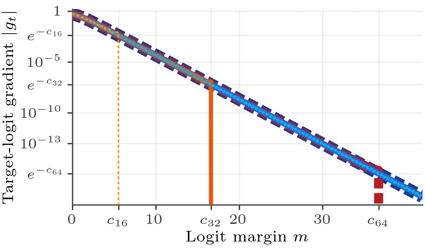
모든 딥러닝 프레임워크의 소프트맥스 연산에 존재하던 두 가지 치명적 수치 버그를 구글 딥마인드가 발견하고 수정했다. Softmax Collapse 버그는 bf16 기준 로짓 마진이 5.5를 넘으면 타겟 그래디언트가 0으로 반올림되어 비대칭성을 유발했고, Softmax Cancellation 버그는 학생과 교사 로짓이 같아도 0이 아닌 그래디언트를 생성했다. 6줄의 코드로 argmax를 분리하고 softplus를 적용한 수정을 통해 테스트 정확도가 23%에서 85%까지 상승했으며, 2022년부터 미해결이던 Slingshot loss spike 현상도 완전히 제거되었다.
핵심 포인트: 핵심 성과: 단순한 코드 수정으로 테스트 정확도 62%p 향상(23% → 85%), grokking 속도 개선, 가중치 감쇠 없을 때 정확도 붕괴 방지, 지식 증류 시 네트워크 드리프트 중단.
논문 (Papers)
Noise: 역전파 없이 AI 학습 속도 4,000배 향상
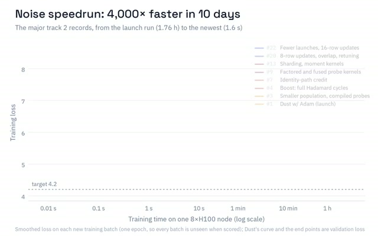
기존 AI 모델 학습은 역전파 알고리즘에 의존하고 있으나, Q Labs의 Noise 프로젝트는 역전파 없이 신경망을 학습시키는 새로운 방식을 제시한다. 10일간의 개발로 학습 시간을 1시간 46분에서 1.6초로 단축하여 약 4,000배의 속도 향상을 달성했다. 다만 현재는 소규모 데이터셋에서의 검증 단계이며, 대규모 AI 모델에서의 효과 확인을 위해 더 큰 데이터셋으로 검증을 진행 중이다.
핵심 포인트: 핵심 성과: 1시간 46분의 학습 시간을 1.6초로 단축하여 약 4,000배의 학습 속도 향상 달성, 역전파 없는 새로운 신용 할당 알고리즘으로 브루트포스 학습 방식 검증
기타 (Others)
Anthropic — 복잡한 멀티에이전트 대신 단일 에이전트 구조가 효율적
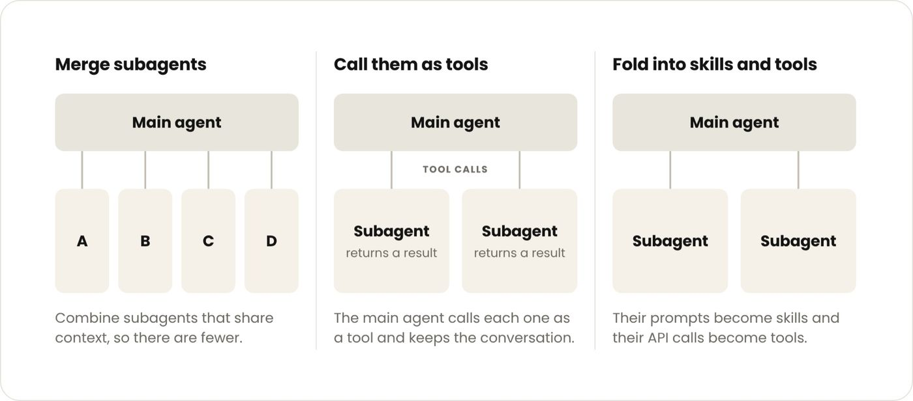
기업들이 라우터, 플래너, 도메인 등 다수의 서브에이전트를 구성했지만, 최근 사례들에서 단일 메인 에이전트에 스킬과 도구를 통합하는 구조가 더 높은 품질, 낮은 비용, 짧은 지연시간을 제공하는 것으로 나타났다. Anthropic이 권하는 프로그레시브 디스클로저 방식은 처음부터 모든 정보를 컨텍스트에 로드하지 않고 필요한 순간에만 공개하며, 이를 통해 정보 손실 문제를 해결하고 모델 루프를 효율화한다.
핵심 포인트: 핵심 성과: 단일 에이전트 루프가 멀티에이전트 구조 대비 약 2배 빠른 성능을 보였으며, 프로그레시브 디스클로저를 통해 컨텍스트 전달 과정의 정보 손실을 최소화하고 불필요한 데이터 재읽기를 제거한다.
🔗 claude.com/ko/resources/articles/building…
기타 (Others)
Kimi K3.1 Pro — 중국 문샷AI의 3조 파라미터 오픈웨이트 모델 공개
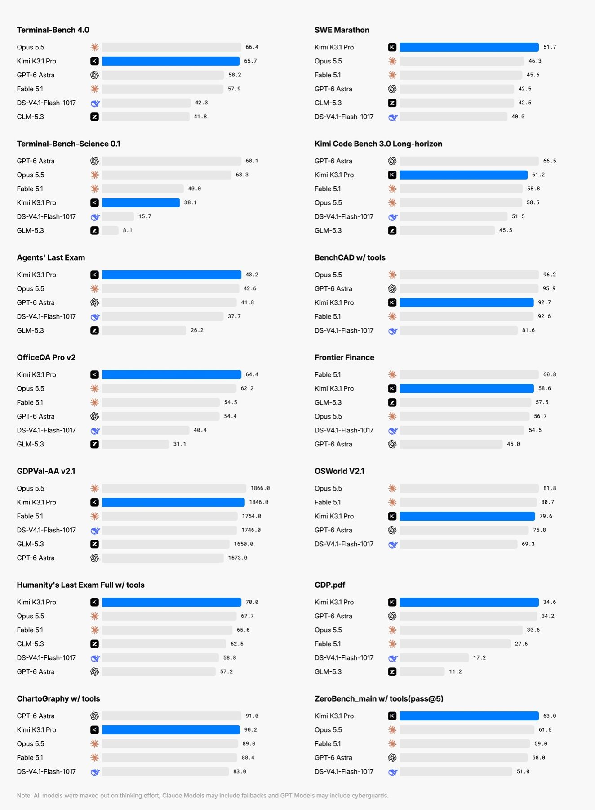
중국의 문샷AI가 2.8조 파라미터 규모의 Kimi K3.1 Pro를 공개했다. MoE 구조로 토큰마다 1,040억 개만 활성화하며 100만 토큰 컨텍스트에서 텍스트와 이미지를 처리한다. 독립 평가에서 4위를 차지했으며 Claude Opus 5.5의 절반 가격으로 제공되고, 2배에서 3배 빠른 Highspeed 버전도 함께 출시되었다. 11월 4일까지 전체 모델 가중치를 공개할 예정이다.
핵심 포인트: 핵심 성과: 코딩 벤치마크에서 Opus 5.5와 0.7점 차이(65.7% vs 66.4%), 장기 코딩 과제 SWE Marathon에서 51.7점 달성, GPT-6 Astra 대비 우월한 성능 입증. 현재 Kimi 앱, API, Kimi Work/Code에서 즉시 이용 가능하며 오픈소스 공개로 중국 AI 모델의 국제 경쟁력 강화.
기타 (Others)
Raw-RAG — 복잡한 에이전트 메모리보다 단순 검색이 더 효과적
LLM 장기 대화 이해를 위해 복잡한 에이전트 메모리 시스템이 필수라고 여겨져 왔으나, 이 연구는 원본 대화 이력에 밀집 검색과 재순위 매김을 적용하는 Raw-RAG 방식이 더 우수함을 보였다. LoCoMo, LongMemEval, MEME, MemoryAgentBench 등 4개 벤치마크에서 Raw-RAG가 6개 중 7개 설정에서 1위를 차지했으며, 가장 강력한 에이전트 메모리 시스템을 0.13~5.53점 초과 달성했다. 원본 이력이 변환 과정에서 손실되는 관계성과 의존성 정보를 더 잘 보존하기 때문이다.
핵심 포인트: 핵심 성과: Raw-RAG는 4개 장기 메모리 벤치마크에서 기존 복잡 메모리 시스템 대비 0.135.53점 우수하며, BEAM-1M 수집 시간도 0.3시간으로 Mem0, MemOS, Memora의 3.227시간 대비 10~83배 빠름.
논문 (Papers)
MemoryTax: AI 에이전트는 별도 메모리 프레임워크보다 원본 기록 검색이 효율적
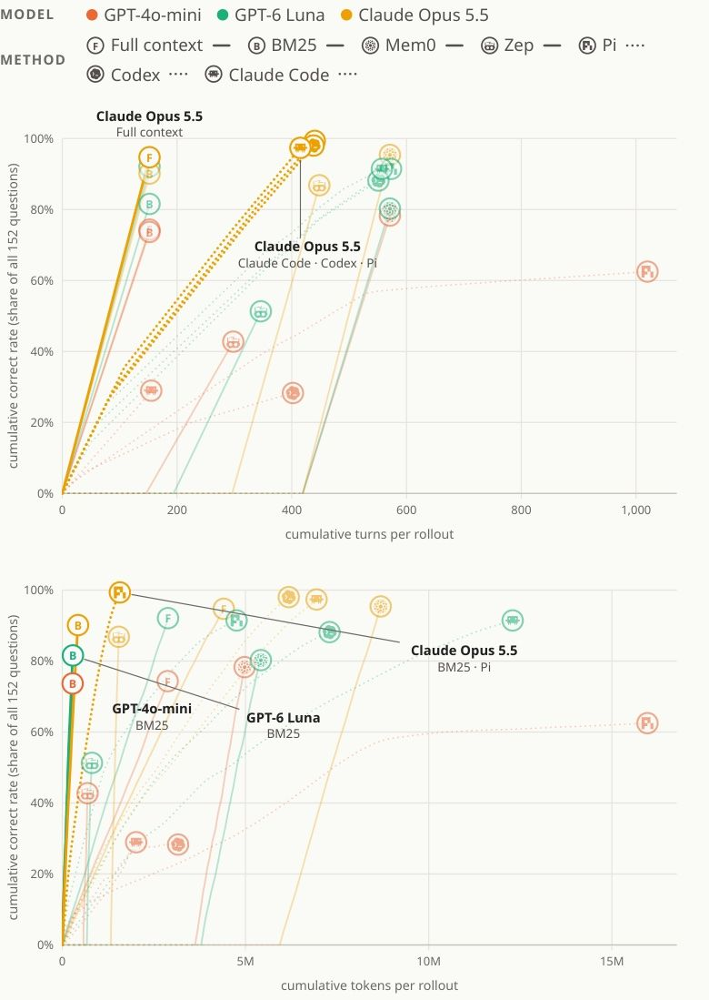
AI 에이전트에 Mem0, Zep 같은 별도 메모리 프레임워크를 붙이는 방식의 비효율성을 분석한 연구. 약한 모델에서는 메모리 구축 비용이 전체 컨텍스트 처리 비용보다 높지만, Claude Opus 5.5 같은 강력한 모델이 원본 대화 기록을 직접 검색할 때는 전체 컨텍스트 대비 절반 이하의 비용으로 99% 정확도를 달성한다. 모델 성능이 향상될수록 인위적 메모리 레이어보다 원본 데이터 검색 도구를 제공하는 설계가 더 효과적임을 시사한다.
핵심 포인트: 핵심 성과: GPT-4o-mini에서는 Mem0의 메모리 구축 비용이 전체 컨텍스트보다 높지만, Claude Opus 5.5의 직접 검색은 절반 이하 비용으로 99% 정확도 달성. 모델 성능 고도화에 따라 에이전트 설계의 핵심이 메모리 구축에서 검색 도구 제공으로 전환될 것으로 예측된다.
논문 (Papers)
HNSW — 벡터 DB의 핵심 알고리즘 완전 분석
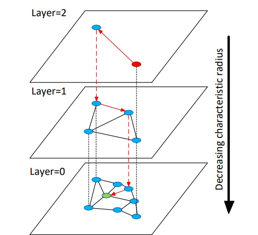
RAG 기반 검색 시스템에서 대규모 벡터 데이터를 효율적으로 검색할 때 기존 k-NN의 O(N) 연산 시간이 병목이 되는 문제가 발생한다. HNSW는 계층적 그래프 구조를 활용해 공간 분할의 차원의 저주를 극복하고, 95~98%의 재현율을 유지하면서 k-NN 대비 수백 배 빠른 검색 속도를 제공한다. Small World 네트워크와 Skip List의 개념을 고차원 공간에 적용한 이 알고리즘은 현재 Qdrant, Milvus, Pinecone 등 주요 벡터 DB의 핵심 인덱싱 엔진으로 채택되고 있다.
핵심 포인트: 핵심 기여: HNSW는 공간 분할 기반 ANN의 한계를 그래프 기반 네비게이션으로 해결하여 O(log N) 연산 시간으로 단축했으며, 9598% 재현율 유지 하에서 k-NN 대비 수백수천 배의 검색 속도 향상을 달성했다.
🔗 cherie-ssom.tistory.com/m/66
기타 (Others)
FrontierMemory — AI 에이전트의 메모리 생성 능력 벤치마킹 플랫폼
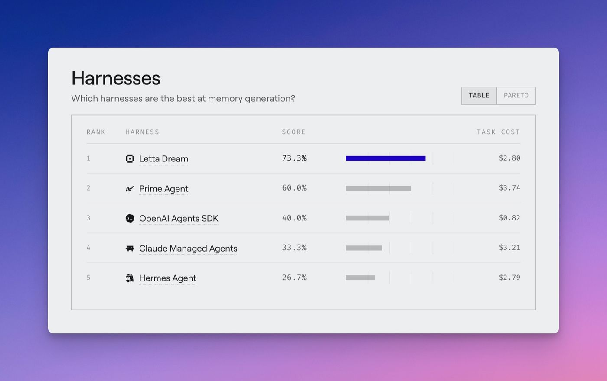
AI 에이전트가 과거 작업 기록을 바탕으로 생성한 메모리의 질을 평가하는 객관적 기준이 부족한 상황에서, FrontierMemory는 메모리 품질을 정량화하는 벤치마크 리더보드를 제공한다. 에이전트에게 과거 작업 궤적을 제공하고 이를 통해 생성된 메모리와 스킬이 새로운 과제 해결에 얼마나 효과적인지를 평가하며, 모델 엔진과 하니스 설계의 영향을 분리하여 측정함으로써 메모리 생성 능력의 진정한 성능을 파악할 수 있도록 한다.
핵심 포인트: 핵심 성과: Opus 5.5와 Kimi K3.1 Pro가 73.3%의 최고 메모리 생성 점수를 기록했으며, 동일한 모델 엔진도 하니스 설계에 따라 성능이 최대 40% 이상 차이를 보인다.
기타 (Others)
QD-Rec — 진화적 탐색으로 추천 근거까지 생성하는 의사결정 시스템
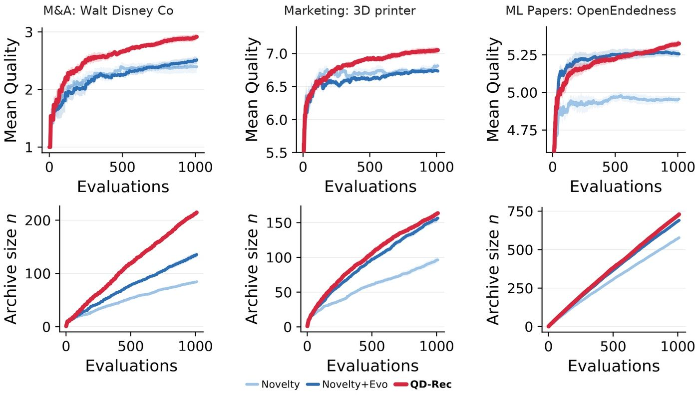
기존 추천 시스템은 단일 정답만 제시하는 한계가 있다. QD-Rec은 컨텍스트 밴딧과 LLM의 진화적 가설 생성을 결합하여 후보군과 자연어 추천 근거를 동시에 탐색하며 확장한다. 인수 대상 발굴, 고객 타깃팅, 논문 추천 등 다양한 실험에서 기존 방식을 능가하는 품질과 다양성을 달성하며, 깃허브 오픈소스로 공개되어 있다.
핵심 포인트: 핵심 성과: 컨텍스트 밴딧 기반 진화적 탐색과 LLM 통합으로 인수 대상 발굴, 고객 타깃팅, 논문 추천 작업에서 품질과 다양성 측면 최우수 성능 달성.
기타 (Others)
World Models — 물리적 경제 혁신을 가속화하는 세계 모델
물리적 세계의 복잡한 상호작용을 시뮬레이션하기 어려워 실제 환경에서의 로봇 제어, 자율주행, 산업 자동화 등이 제한되는 문제를 해결한다. 세계 모델은 물리 법칙과 환경 역학을 학습하여 현실을 정확히 모사함으로써 디지털 환경에서 안전하고 효율적인 시뮬레이션과 테스트를 가능하게 한다. 이를 통해 물리적 경제 분야의 혁신을 촉진하고 개발 사이클을 단축할 수 있다.
핵심 포인트: 핵심 기여: 세계 모델을 통해 물리적 시스템의 정확한 디지털 시뮬레이션을 구현하여 로봇, 자율주행, 산업 시스템의 개발 속도를 획기적으로 단축하고 실제 환경 테스트 비용을 대폭 감소시킨다.
기타 (Others)
DEVTOOLS & OPEN SOURCE
Apps in Toss Harness — 토스 미니앱 개발을 위한 AI 에이전트 플랫폼
토스 미니앱 개발 시 반복되는 화면 문구 검수, 설계 평가, 개발 보조 작업을 자동화하는 AI 에이전트 플랫폼. 에이전트 플러그인, 스킬, 개발 패키지로 구성된 모노레포 구조로 UX 라이팅 기준 적용, 다크패턴 감지, 카피 재작성 제안 등 측정 가능한 기준에 따른 품질 판정 및 개선을 실현한다.
핵심 포인트: 핵심 기여: pnpm 모노레포 기반의 재사용 가능한 에이전트 스킬 세트를 제공하여 미니앱 팀의 반복 작업 자동화와 일관된 UX 라이팅 기준 적용을 통해 개발 생산성 및 사용자 경험 품질을 동시에 향상.
🔗 github.com/toss/apps-in-toss-harness/blob…
GitHub
Papers with Code — AI 논문·코드·리더보드 추적 플랫폼 완전 오픈소스화
최신 AI 논문과 SOTA 리더보드 추적이 분산되어 있어 연구자들의 정보 수집 효율이 떨어지는 문제를 해결하기 위해 Papers with Code가 전체 코드를 Apache 2.0 라이선스로 오픈소스 공개했다. Python FastAPI 백엔드와 React 프론트엔드 기반의 모노레포 구조로 논문 시각화 API와 MCP 서버를 제공하며, 하이브리드 검색, 공개 API, 자동화된 논문 임포트 기능을 통해 연구 추적 효율성을 높인다.
핵심 포인트: 핵심 기여: ArXiv 및 Hugging Face 자동 임포트, 의미론적·어휘적 하이브리드 검색, 외부 리더보드 자동 동기화, 개발자 친화적인 REST API 제공으로 사내 연구 도구 및 AI 에이전트 통합 확장성 확보.
🔗 github.com/huggingface/paperswithcode
GitHub
Orchestrator — 개발 workflow 자동화 및 PR 관리 플랫폼
개발자가 수동으로 PR 상태를 추적하고 우선순위를 관리하는 번거로움을 해결하는 플랫폼. Orchestrator는 에이전트의 실시간 활동, PR, CI, 코드 리뷰를 기반으로 세션을 자동으로 배치하고, 검토 요청이나 실패한 체크 같이 개발자의 즉각적인 조치가 필요한 작업을 우선 표시한다. 개발자는 대기 중인 작업을 놓치지 않고 필요한 것만 집중해서 처리할 수 있다.
핵심 포인트: 핵심 성과: 실시간 사실 기반 자동 배치로 상태 업데이트 의존 제거 및 우선순위 관리 자동화, 한 카드에 태스크·에이전트·브랜치·PR·채팅·터미널·파일 변경사항 통합으로 작업 효율성 극대화.
🔗 threads.com/@maaz_ins/post/De8iReYjaZx?xm…
기타 (Others)
ThinkRail — JetBrains의 에이전트 중심 경량 IDE
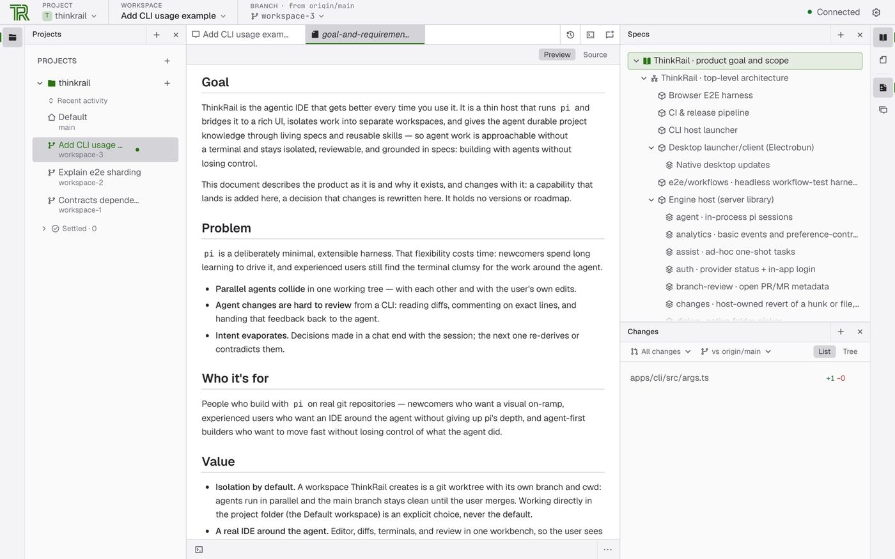
개발자가 AI 에이전트와의 반복 작업 중 컨텍스트 손실과 브랜치 관리 복잡성으로 어려움을 겪고 있다. JetBrains의 인큐베이터 프로젝트 ThinkRail은 git worktree 자동 분리, 지속형 SPEC.md 기반 메모리 관리, 실시간 IDE 통합, 그리고 다중 에이전트 세션 관리를 통해 에이전트 기반 개발 워크플로우를 최적화한다. 세션 간 프로젝트 지식 보존으로 매번 맥락을 재설명하는 번거로움을 줄이고, 통합 인터페이스에서 PR 열기와 CI 피드백 처리까지 자동화한다.
핵심 포인트: 핵심 성과: GitHub TypeScript 트렌딩 3위 달성, 0.x 초기 버전부터 git worktree 자동 격리, SPEC.md 그래프 기반 세션 간 메모리 보존, Monaco 에디터 통합으로 리뷰 왕복 대폭 감소.
🔗 github.com/JetBrains/thinkrail
기타 (Others)
AX — 구글의 자율 에이전트 대규모 관리 오픈소스 런타임
자율 에이전트 워크로드를 대규모로 실행할 때 무한 루프, 토큰 낭비, 예기치 않은 중단 등의 문제가 발생한다. 구글의 AX는 쿠버네티스처럼 YAML 파일로 태스크와 워크스페이스, 모델을 선언하면 격리된 샌드박스 컨테이너에서 에이전트의 전체 생명주기를 제어하는 오픈소스 런타임이다. 실시간 상태 확인, 일시중지, 재개 등의 기능을 제공하며 인프라 레벨에서 에이전트 실행 문제를 체계적으로 해결한다.
핵심 포인트: 핵심 성과: 수십억 개의 자율 에이전트 워크로드를 클러스터 단위로 효율적으로 관리하며, 쿠버네티스 방식의 선언형 오케스트레이션으로 대규모 에이전트 환경 구축을 단순화한다.
GitHub
Open Ontologies — AI 추론을 Lean 4로 수학적 증명 검증
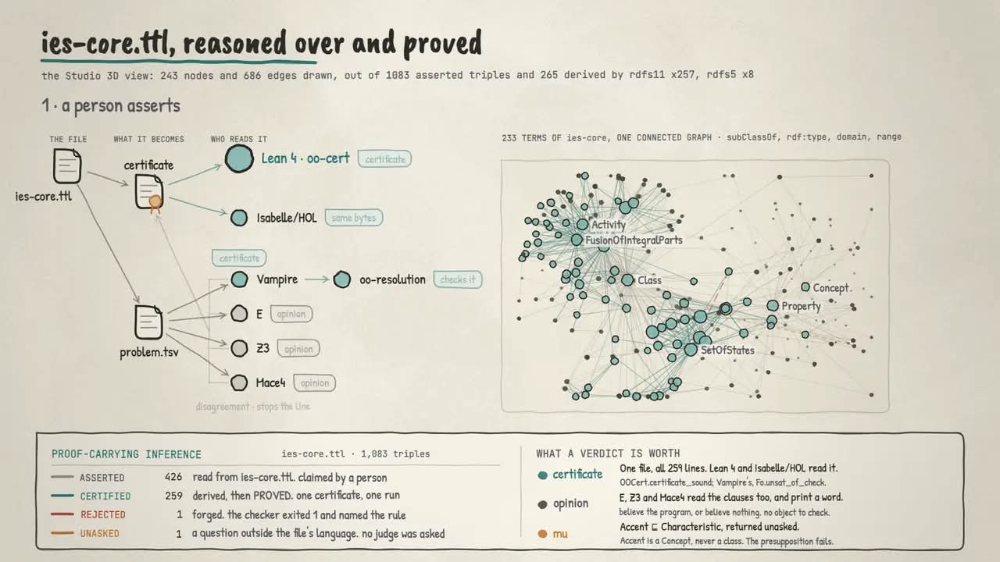
AI 에이전트의 추론 결과가 논리적으로 타당한지 검증하기 어려운 문제를 해결하는 오픈소스 도구. Rust 기반으로 지식 그래프의 새로운 관계 도출 시 Lean 4 증명기로 모든 결론을 수학적으로 증명하고, 테라폼 스타일의 변경 영향도 분석 및 롤백을 지원한다. 증명 가능한 온톨로지 관리로 AI 시스템의 신뢰성과 감사 가능성을 확보한다.
핵심 포인트: 핵심 성과: 1,083개 삼중항 중 426개 주장, 259개 Lean 4 증명, 1개 위조 감지로 100% 증명율 달성. 한 번의 검증기 실행으로 모든 259개 증명을 동시 검증 가능.
🔗 github.com/fabio-rovai/open-ontologies
GitHub
DecisionFormer — 단일 추론으로 의사결정하는 오픈소스 트랜스포머 라이브러리
LLM 기반 의사결정 시스템에서 긴 텍스트 생성으로 인한 비효율성 문제를 해결하는 오픈소스 라이브러리. 단 한 번의 추론으로 각 선택지의 보정된 확률을 계산하여 즉각적인 의사결정을 실현한다. Qwen, Llama, DeepSeek 등 주요 백본을 지원하며, 단일 24GB GPU에서 8B 모델의 QLoRA 학습부터 보정, 평가, API 서빙까지 전체 파이프라인을 한 번에 처리할 수 있다.
핵심 포인트: 핵심 성과: 텍스트 생성 없이 단일 포워드 패스로 보정된 확률값 도출, 24GB GPU에서 완전한 학습-서빙 파이프라인 구성 가능, 3줄의 코드로 의사결정 구현 및 단일 명령어로 모델 훈련과 API 서빙 지원.
🔗 github.com/FrontiersMindAI/decisionformer
GitHub
Pixel — 터미널에서 그래픽 UI를 구현하는 라이브러리
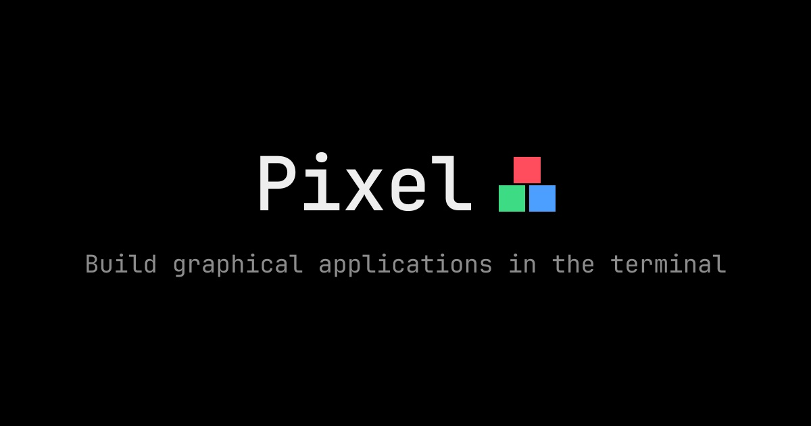
기존 터미널 사용자 인터페이스는 텍스트 기반의 제약이 있어 고급 그래픽 표현이 어렵다는 문제가 있다. Pixel은 터미널 내에 픽셀 단위의 그래픽을 렌더링할 수 있는 GUI 라이브러리로, 초당 120프레임의 성능을 제공하며 기존 TUI에 내장 가능하다. TypeScript React API를 지원하고 Chromium 웹뷰 컴포넌트를 포함하여 크로스 플랫폼에서 동작한다.
핵심 포인트: 핵심 성과: 터미널에서 초당 120프레임의 픽셀 퍼펙트 그래픽 렌더링을 구현하며, macOS, Linux 등 다중 플랫폼 지원과 기존 TUI 애플리케이션 내 임베딩 가능성을 제공한다.
기타 (Others)
imozuru — AI 조사에서 요약 대신 원문까지 추적하는 Claude 코드 스킬
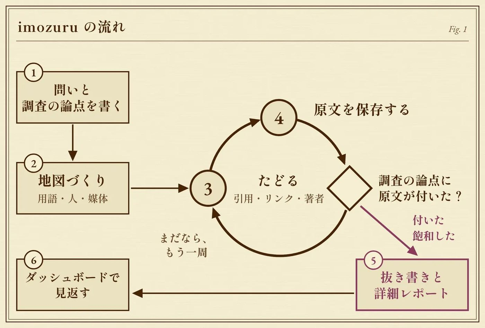
AI에게 조사를 요청할 때 일반적으로 검색 상위 결과를 요약하는 방식의 한계를 해결하는 도구. imozuru는 특정 분야의 용어, 중심 인물, 자료 출처를 먼저 파악한 후 참고문헌과 인용을 타고 원문까지 추적하며, 발견한 원문을 요약하지 않고 그대로 저장하고 각 주장이 어느 파일의 몇 번째 줄인지 정확히 지시해 사용자가 출처를 직접 검증할 수 있게 한다.
핵심 포인트: 핵심 기여: GitHub 별 1,173개를 획득한 Claude Code 스킬로, 도서관정보학의 정보탐색 이론을 응용하여 AI 조사의 신뢰성을 높임. 요약 손실로 인한 세부 정보 누락을 방지하고 모든 출처를 추적 가능하게 함.
🔗 github.com/MaryCache/imozuru
GitHub
Cloudflare Security Audit Skill — 코딩 에이전트를 보안 감사관으로 전환
보안 감사에서 발견된 취약점을 검증하는 단계가 가장 비용이 많이 드는 문제를 해결하는 오픈소스 프레임워크. Cloudflare의 Security Audit Skill은 독립된 에이전트가 탐색과 검증을 분리 수행하고, 스키마 기반 자동 검증기를 통해 외부 의존성 없이 다단계 보안 감사를 자동화한다. 정찰, 커버리지 기반 탐색, 후보 검증, 구조화 출력, 독립 검증, 중립 보고의 6단계로 코드베이스를 체계적으로 감사한다.
핵심 포인트: 핵심 성과: 이번 주에만 2,818개 스타를 획득했으며, 발견 에이전트와 검증 에이전트를 분리하는 적대적 검증 구조로 오탐을 획기적으로 감소시킨다.
🔗 github.com/cloudflare/security-audit-skill
GitHub
AbyssBeacon — 6개 모델 저장소를 한곳에서 관리하는 오픈소스 도구
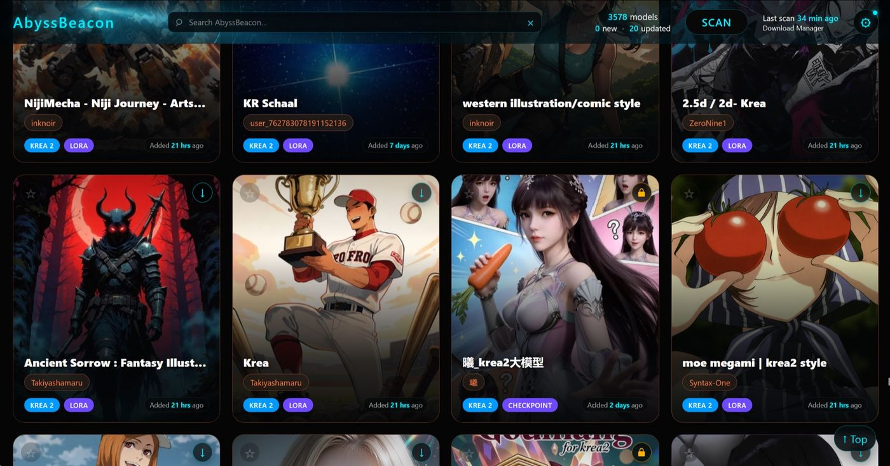
AI 모델을 찾을 때 Hugging Face, CivitAI, ModelScope 등 여러 사이트를 각각 방문해야 하는 번거로움이 있다. AbyssBeacon은 이 6개 출처를 하나의 로컬 인터페이스에 통합하여 신규 모델 발견, 버전 업데이트 추적, 이미지·영상·메타데이터 미리보기, 즐겨찾기 관리, ComfyUI 연동을 제공한다. 모델과 LoRA를 빈번히 테스트하는 사용자가 후보 탐색과 정리를 효율적으로 수행할 수 있도록 돕는다.
핵심 포인트: 핵심 성과: Hugging Face, CivitAI, CivitAI Red, ModelScope, TensorHub Art, SeaArt 6개 출처를 통합 관리하며, 중단된 다운로드 이어받기와 ComfyUI 자동 연동을 지원한다. Windows 환경에서 Python 3로 무료 오픈소스로 제공된다.
🔗 github.com/Tomat0223/AbyssBeacon
GitHub
Gridline — 건축 워크플로우를 위한 AI 에이전트 툴킷
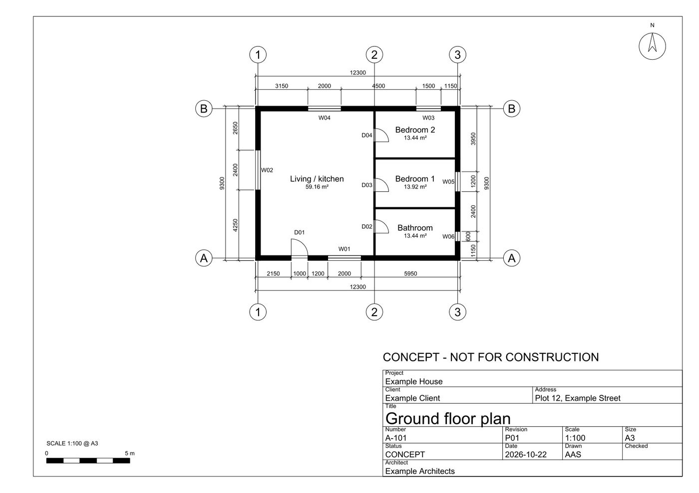
건축 설계 과정에서 CAD 도면, 치수, 문서화, 협업, 수정 등 반복적이고 복잡한 업무가 대부분을 차지하는 문제를 해결하기 위해 개발된 오픈소스 툴킷. 30개의 특화된 건축 및 엔지니어링 스킬과 12개의 전문 AI 에이전트를 제공하여 Claude Code, Codex, Gemini CLI 등의 AI 코딩 에이전트에 실제 건축 작업 능력을 부여한다. 건물 사양에서 DXF 평면도, 벡터 PDF, 실/문/창 일정표를 자동으로 생성하고, 설계 변경 시 연관된 여러 도면을 일관되게 업데이트하는 작업을 지원한다.
핵심 포인트: 핵심 기여: 프로그래밍 단계부터 부지 분석, 개념 설계, 도면 작성, BIM/CAD 워크플로우까지 전체 건축 프로젝트 생명주기를 지원하는 구조화된 AI 에이전트 기능 제공.
🔗 github.com/MakeItEzzz555/Gridline
GitHub
LiteLLM 1.107.0 — PyPI 패키지 해킹으로 자격증명 탈취 악성코드 배포
인기 있는 파이썬 LLM 라이브러리 LiteLLM의 1.107.0 버전이 PyPI에서 해킹되어 자격증명 탈취기와 원격 접근 트로잔이 포함된 상태로 배포되었다. 악성코드는 Python 시작 훅을 통해 LiteLLM 사용 여부와 관계없이 모든 파이썬 프로세스에서 자동 실행되며, AWS/GCP 클라우드 자격증명, SSH 키, 환경변수, LLM 프로바이더 API 키 등을 탈취한 후 외부로 전송하고 백도어를 설치한다.
핵심 포인트: 핵심 위협: 배포된 7개 모든 설치 파일이 감염되었으며, 매시간 공격자 서버에서 원격 명령을 수신하는 백도어가 심어져 있다. 즉시 1.106.2 이하 버전으로 롤백하고 모든 노출된 자격증명을 로테이션해야 한다.
🔗 cybersecuritynews.com/litellm-compromised/
기타 (Others)
TLA+ — 프로그램과 시스템을 수학 기반으로 모델링하는 언어
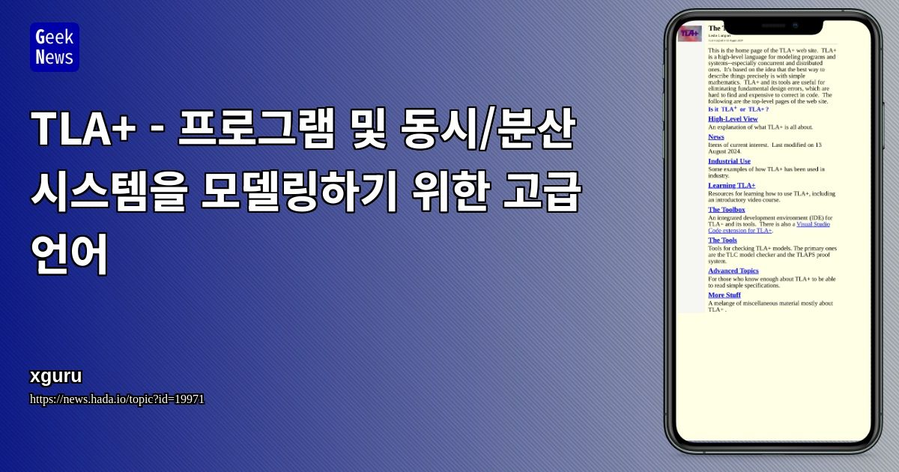
복잡한 분산 및 병렬 시스템에서 설계 오류를 코딩 단계 이전에 발견하기 어려운 문제가 있다. TLA+는 코드 수준이 아닌 상위 수준에서 소프트웨어와 하드웨어를 상태 기계로 모델링하고 검증하는 수학 기반 언어이다. TLC 모델 검사기와 증명 검사기를 통해 모든 가능한 실행 경로를 자동으로 검사하며, 실제 산업 프로젝트에서 실시간 운영체제 코드 크기를 10분의 1로 단축한 사례가 있다.
핵심 포인트: 핵심 기여: 상태 기반 모델링으로 설계 오류를 조기 발견하고, 복잡한 분산 시스템의 신뢰성을 코드 작성 전에 검증할 수 있도록 지원한다. PlusCal을 통해 병렬 알고리듬을 의사코드 대신 테스트 가능한 정확한 모델로 작성할 수 있다.
GitHub
Agent 보정 시 필요한 검증 계층 구조
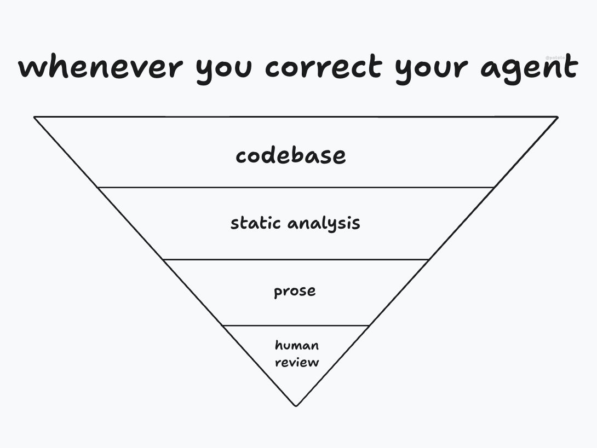
AI 에이전트를 수정할 때 발생하는 검증 과정의 복잡성을 다루는 콘텐츠. 에이전트 보정 작업에서 코드베이스 검증, 정적 분석, 산문 형태의 검토, 그리고 최종 인간 검토 단계라는 계층적 검증 구조를 제시하고 있다. 각 단계에서 필요한 점진적 검증으로 에이전트의 신뢰성과 정확도를 높이는 방식을 보여준다.
핵심 포인트: 핵심 기여: 에이전트 보정 과정에서 4단계 검증 계층(코드베이스-정적분석-산문-인간검토)을 통해 체계적인 품질 보증 방식을 제시하고, 각 단계의 역할과 필요성을 명확히 정의했다.
🔗 threads.com/@unclejobs.ai/post/Dey7qPfkzD…
기타 (Others)
php2shell-checker — PHP 보안 취약점 실시간 공격 탐지 도구
PHP 기반 웹사이트를 노린 대규모 보안 공격이 발생하면서 전 세계 운영자들이 위협에 노출되고 있다. OpenAI가 공개한 php2shell-checker는 웹사이트의 PHP 버전을 검사하여 알려진 취약점 노출 여부를 즉시 파악할 수 있는 도구다. 서버 접근 권한이 있을 때와 URL만으로도 검사할 수 있는 두 가지 방식을 제공하며, 결과를 OK, POTENTIALLY VULNERABLE, UNKNOWN으로 분류하여 WordPress 등 PHP 기반 사이트 운영자의 신속한 대응을 돕는다.
핵심 포인트: 핵심 성과: 심각도 9.2점의 PHP 치명적 취약점 공개 후 45분 만에 수만 건, 2시간 만에 수십만 건으로 급증한 공격을 실시간 감지하고 기울기, 서버 및 URL 기반 두 가지 검사 방식으로 WordPress 등 대규모 사이트의 즉각적 취약점 판단 가능.
🔗 github.com/openai/php2shell-checker
GitHub
Blender Skills — AI 에이전트용 Blender 5.2 3D 제작 워크플로우 스킬셋
3D 제작 과정에서 AI 에이전트의 활용 범위가 제한적이라는 문제를 해결하기 위해 Blender 5.2용 AI 스킬 22개를 패키징한 오픈소스 프로젝트. Claude Code, Codex, Cursor 등 주요 AI 코딩 에이전트에서 즉시 활용 가능하며, 모델링부터 재질 제작, 애니메이션, 렌더링, 최적화, 품질 검증까지 전체 3D 파이프라인을 자동화한다. 겹침 감지 및 부품 정렬 검사 같은 QA 기능도 포함되어 있고, 생성된 결과물을 Roblox, Unity, Unreal Engine 등으로 직접 내보낼 수 있다.
핵심 포인트: 핵심 기여: Blender 5.2 LTS+ 기반 22개의 프로덕션급 스킬로 전체 3D 워크플로우를 자동화하며, Claude Code, Codex, OpenCode, Gemini CLI, GitHub Copilot, Cursor 등 6개 주요 AI 에이전트와 즉시 호환된다.
🔗 github.com/EL4CTEO/blender-skills
GitHub
PRODUCT & INDUSTRY
ARTEX — 중국 해킹 조직의 AI 자동 침투 도구, 국내 금융사 대규모 공격
중국 국가배후 해킹 조직 Storm-0940이 ARTEX라는 AI 에이전트 도구로 마이크로소프트 365 고객 2,250곳 이상을 공격하고 있다. 관리 업체의 클라우드 백업 서비스 침해를 통해 기존 신뢰 관계를 악용하여 직원 비밀번호 공격 없이 분당 2,900회의 로그인을 시도하며, 일부 기업의 관리자급 권한 탈취까지 3시간 이내에 완료한다. 동일한 ARTEX 도구는 9월 말부터 국내 신한·국민·하나은행 등 금융사를 연달아 침해한 것으로 확인되었으며, 금융위원회는 은행·저축은행·캐피탈 등 16개 금융기관의 침해를 파악했다.
핵심 포인트: 핵심 위협: AI 에이전트가 주말과 휴일 없이 다중 침투 경로를 동시 실행하면서 표적 선정부터 관리자급 권한 탈취까지 소요 시간을 대폭 단축, 약 10만 건의 성명·연락처·주민등록번호·이메일 유출 확인
🔗 threads.com/@choi.openai/post/DezLND3j3yN…
기타 (Others)
Cloudflare AI Search — RAG 파이프라인을 완전 관리형 서비스로 통합
RAG 시스템 구축 시 문서 수집부터 답변 생성까지 여러 단계를 직접 연결하는 복잡성이 문제다. Cloudflare AI Search는 Workers AI, Vectorize, R2, Browser Run을 통합하여 이 전체 파이프라인을 하나의 관리형 서비스로 제공한다. 이미지 픽셀 기반 임베딩, OCR 자동 처리, 벡터 검색과 키워드 검색의 병렬 실행, 선택적 리랭킹 등으로 기존 방식보다 정교한 검색을 구현하며, 사용량 기반 과금과 넉넉한 무료 한도로 소규모 RAG도 실험 가능하게 한다.
핵심 포인트: 핵심 성과: 월 500만 토큰 수집, 10GB 저장, 1000회 쿼리까지 무료 제공하며, 이미지 픽셀 임베딩과 자동 OCR 처리로 시각 정보 검색 신호를 확장. 개발자의 초점이 인프라 선택에서 데이터 정의로 이동.
🔗 blog.cloudflare.com/ai-search-ga/
블로그 (Blog)
Autodesk Forma — Revit 시대 마감, AI 클라우드 설계 플랫폼으로 전환
건축설계 산업에서 40년간 표준으로 사용된 Revit이 AI 시대에 맞춰 클라우드 기반의 Forma로 전환되고 있다. Revit은 파라메트릭 객체와 메타데이터 중심의 구조로 작동했으나, Forma는 이러한 객체 데이터 구조를 기반으로 하면서도 기획설계 단계부터 AI 활용을 가능하게 한다. 지형 메시, 매스 생성, 일조 및 바람길 분석 등을 통합하여 초기 설계 검토를 효율화하고, Revit과의 연동으로 시공 상세 설계로의 자연스러운 워크플로우 전환을 지원한다.
핵심 포인트: 핵심 기여: 1982년 CAD, 2000년 Revit, 2023년 Forma로 이어지는 설계 도구의 진화 단계 완성. AI와 클라우드 기반으로 기획설계 단계의 생산성을 높이면서 기존 Revit 자산과의 연동성을 유지하여 업계 전환 장벽을 최소화한다.
🔗 threads.com/@sooo.ryu/post/DevljM_gfYw?xm…
기타 (Others)
Exa 3.0 — AI 검색 토큰 95% 절감하는 차세대 검색 엔진
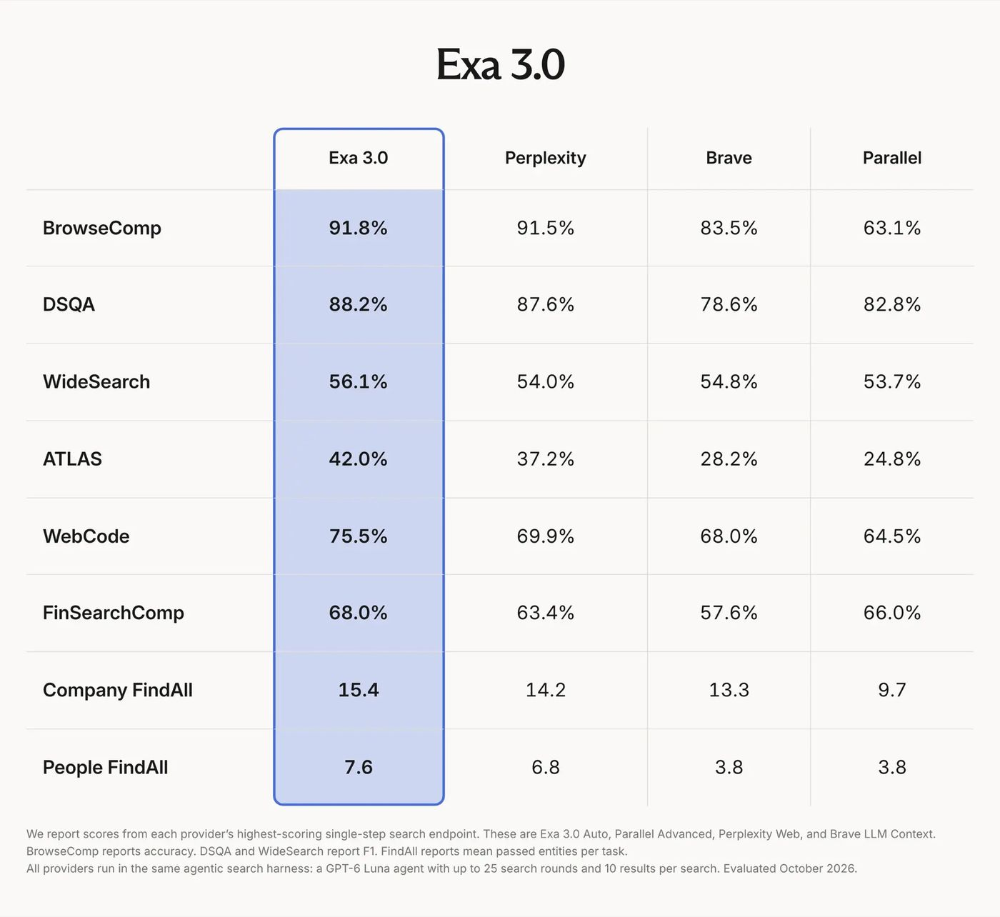
AI 에이전트가 웹 검색 시 전체 페이지를 처리하느라 소비하는 토큰이 과도하다는 문제를 해결하기 위해 Exa가 3.0을 출시했다. 더 큰 임베딩 모델 학습, Dynamic Highlights 기술로 중요 내용만 추출하여 토큰 사용량을 95% 감소시키고, 수십억 개의 상품, 지역 사업체, 이벤트 등 다양한 데이터를 인덱스에 추가했다. 자체 벤치마크에서 코딩, 금융, 연구 등 모든 평가 항목에서 1위를 기록했으며, 저비용 대안인 Exa Lite도 함께 출시했다.
핵심 포인트: 핵심 성과: Dynamic Highlights로 토큰 사용량 95% 감소, 공개 벤치마크 및 코딩·금융·마켓 인텔리전스 평가에서 1위 달성, 상품 12억 7천만 건과 사업체 2억 1천만 곳의 검색 가능.
기타 (Others)
Create Canvas — 코드 기반 UI 설계 및 반복 작업 가속화
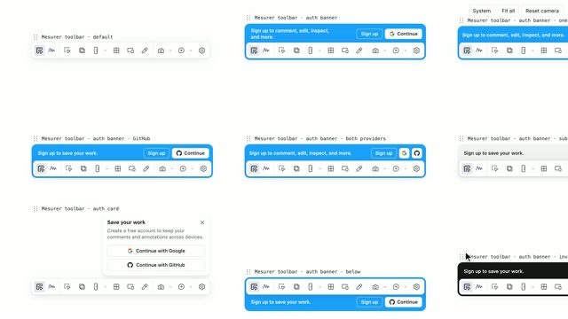
디자인 툴과 코드 간의 왕복 작업이 비효율적인 문제를 해결하는 기능. 레포지토리의 기존 컴포넌트와 스타일, 디자인 토큰을 캔버스 환경으로 직접 가져와 AI 에이전트와 함께 여러 시안을 한 화면에서 동시에 만들고 비교할 수 있다. 코드베이스 맥락을 유지하면서 설계 반복 속도를 크게 단축하며, 특히 컴포넌트가 풍부한 팀에서 높은 효과를 발휘한다.
핵심 포인트: 핵심 기여: 피그마 등 외부 디자인 툴을 거치지 않고 코드 저장소 내에서 직접 UI 시안을 생성 및 비교하는 워크플로우 확립, 여러 디자인 안을 동시에 검토할 수 있는 환경 제공으로 반복 시간 단축.
🔗 ui-skills.com/skills/ibelick/create-canvas
기타 (Others)